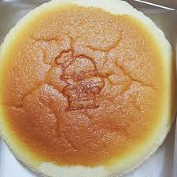
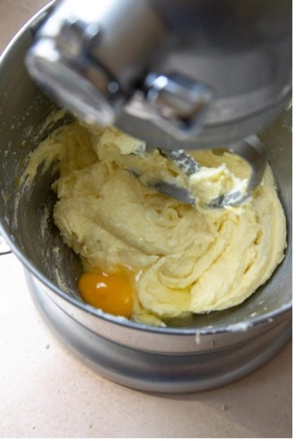

Japanese Cheesecake
After wanting to try a Japanese cheesecake for years, but having no way to buy one in my area, I decided I would make my own. There was no need to be daydreaming about how it would taste when I could make it myself, from scratch! This dessert will blow you away and might easily become one of the best you’ve ever tried. So, if you’re interested in how to make it, scroll down to see our quick and easy recipe for the Japanese cheesecake!
Ingredients

Prep Time
20 Min
Cook Time
70 Min
Yield
6-8 people
Ingredients for 5 servings: 1/2 cup cream cheese, 1/3 cup milk, 2 1/2 tablespoons unsalted butter, 1/4 cup all-purpose flour, 2 egg yolks, 2 1/2 egg whites, 3 1/4 tablespoons sugar
Directions
- Separate the eggs:
Separate 2 egg yolks into a bowl and 2 1/2 egg whites into a mixer bowl. - Melt and mix the base ingredients
In a pot over low heat, combine the butter, cream cheese, and 3 1/4 tablespoons of sugar. Allow the ingredients to melt, stirring constantly until you have a smooth batter. - Incorporate egg yolks
Remove the pot from heat and mix the egg yolks into the batter. Stir gently until fully combined. - Add dry ingredients
Sift in the flour and mix until smooth. All lumps should be gone. - Mix in milk
Slowly pour in the milk, stirring continuously until the batter is smooth and fluid. Add vanilla extract if desired. - Beat egg whites
In the mixer bowl, beat the egg whites until stiff peaks form. - Preheat oven
Preheat the oven to 330°F and prepare a bain-marie. Fill a deep baking dish with water and place it into the oven. - Fold egg whites into batter
Gently fold one-third of the beaten egg whites into the batter mixture. Repeat this process two more times, making sure not to over-mix. - Prepare baking pans
Line the bottoms of two 6-inch cake pans or one 8-inch pan with parchment paper. Pour the batter into the prepared pans. - Bake
Place the cake pans into the preheated bain-marie. Bake at 330°F for 25 minutes. If the cake hasn’t risen, allow more time or raise the temperature slightly. Once it rises, crack open the oven door for 10 seconds, then reduce the temperature to 250°F and bake for another 45 minutes. - Cool in oven
Let the cake rest in the oven for about 10 minutes after baking. - Invert and remove
Remove the cake from the oven, and carefully flip it out of the pan using parchment paper and a plate. Remove the parchment paper from the cake. - Serve
Serve warm and enjoy the bounciness off the cake. You can also chill the cake, but note that it will lose its bounce once cold. - Enjoy your delicious Japanese cheescake!